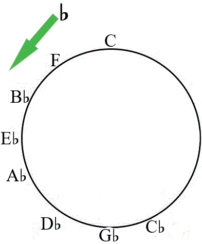
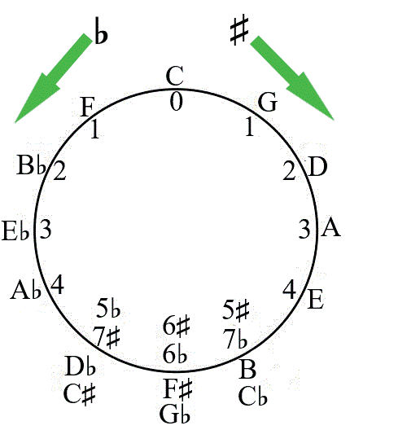

F). Moving anticlockwise in a sequence of perfect fourths, starting from the key of C at the top of the circle, the series is F, B♭, E♭, A♭, D♭, G♭, C♭ as shown in Figure 2.17.

The numbers (1, 2, 3, 4 and so on) on the circle of fifths show the number of sharps or flats in a particular key. Figure 2.18 shows a circle of fifths with keys and the number of sharps or flats in each key.

Major scales
The major scale is the basis for nearly all music you are familiar with. Other scales are described based on their relationships to the major scale. In this section, you will learn to construct the ‘A’, B♭ and E♭ major scales. Note that each major scale